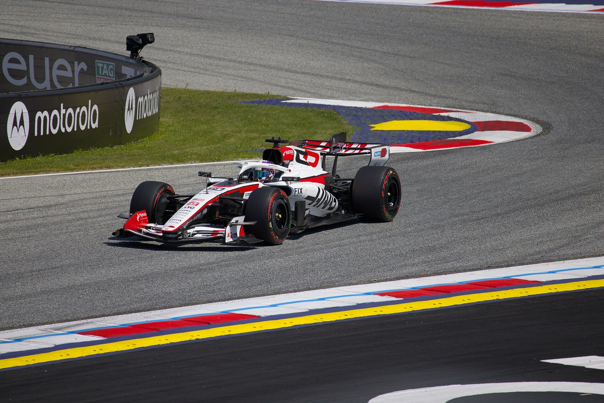
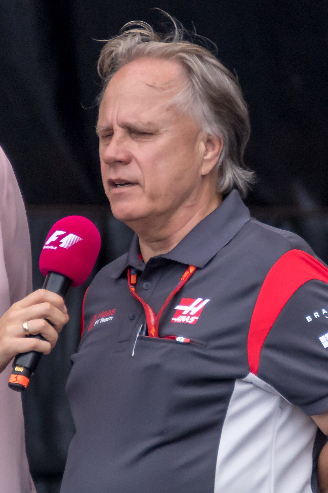

The team
Small team.
Big swing.
Founded by a machine-tool builder from California. Run from North Carolina, Oxfordshire and Maranello. Racing in Formula 1 since 2016.

Photo: Lukas Raich (CC BY-SA 4.0) · Credits
01 · Origin
Gene Haas built a company making machines that make other machines. In 2016 he pointed that precision at the hardest racing series on earth. Eleven seasons on, the team is still here and still independent.

Gene Haas, Founder & Chairman. Photo: Steve from Austin, TX, USA (CC BY-SA 2.0) · Credits
02 · History
Seven moments.
- 2014
The entry
Gene Haas, founder of Haas Automation, is granted a Formula 1 entry.
- 2016
Points on debut
Romain Grosjean finishes sixth in Melbourne in the team’s very first Grand Prix.
- 2018
Fifth in the world
The best season to date: fifth in the Constructors’ Championship and a fourth place in Austria.
- 2022
Pole position
Kevin Magnussen puts a Haas on pole in the rain at Interlagos.
- 2024
A new era
Ayao Komatsu becomes Team Principal. A technical partnership with Toyota Gazoo Racing begins.
- 2025
Fourth again
Oliver Bearman equals the team’s best result with P4 in Mexico City.
- 2026
TGR Haas F1 Team
Toyota Gazoo Racing becomes title partner as the VF-26 takes on all-new regulations.
03 · Season by season
Eleven years.
Points and championship position for every car the team has built.
04 · Leadership
Who’s in charge.
Founder & Chairman
Gene Haas
Team Principal
Ayao Komatsu
Technical Director
Andrea De Zordo
05 · Bases
Three homes.
01 · Headquarters
Kannapolis
North Carolina, USA
local time
02 · Race operations
Banbury
Oxfordshire, UK
local time
03 · Design office
Maranello
Emilia-Romagna, Italy
local time
06 · Careers
Come and build it.
On a small team your work reaches the car quickly, and everyone can see whose it was.
- AerodynamicsMaranello
- Vehicle PerformanceBanbury
- Composites & ManufacturingBanbury
- Race TeamTravelling
- Partnerships & MarketingKannapolis
- Early CareersAll sites
Departments shown for illustration. Live vacancies are on the team’s own site.